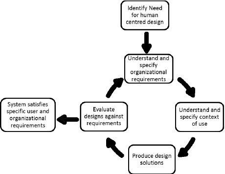

ISO 9241
A ABNT NBR ISO 9241-11 define usabilidade e explica como identificar a informação necessária a ser considerada na especificação ou avaliação de usabilidade de um dispositivos de interação visual em termos de medidas de desempenho e satisfação do usuário. Orientação é dada sobre como descrever o contexto de uso do produto (hardware, software ou serviços) e as medidas relevantes de usabilidade de uma maneira explícita. A orientação é dada na forma de princípios e técnicas gerais, em vez da forma de requisitos para usar métodos específicos.

W3C
O World Wide Web Consortium (W3C) é a principal organização de padronização da World Wide Web. Consiste em um consórcio internacional com quase 400 membros,[1] agrega empresas, órgãos governamentais e organizações independentes com a finalidade de estabelecer padrões para a criação e a interpretação de conteúdos para a Web.
Foi fundado por Tim Berners-Lee em 1994[2] para levar a Web ao seu potencial máximo, por meio do desenvolvimento de protocolos comuns e fóruns abertos que promovam a sua evolução e assegurem a sua interoperabilidade. Sites desenvolvidos segundo esses padrões podem ser acessados e visualizados por qualquer pessoa ou tecnologia, independente dos hardware ou software utilizados, como celulares (em Portugal, telemóveis) e PDAs, de maneira rápida e compatível com os novos padrões e tecnologias que possam surgir com a evolução da internet.
Página Inicial